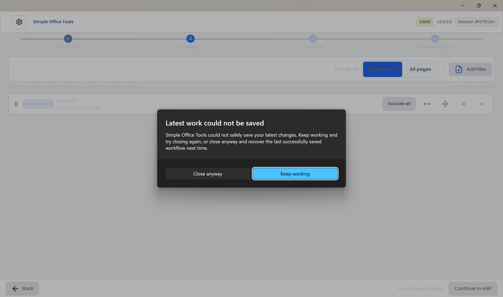

Recover unfinished PDF work
Continue a PDF workflow after closing Simple Office Tools on Windows.
Close normally
Close Simple Office Tools normally. The app saves the current documents and applied changes before closing.
Open the app again
When Continue where you left off? appears, review the document and page counts and last saved time.
Continue previous work
Choose Continue previous work. The app restores your pages and changes, then rebuilds Customise and Review.
Review and export
Review the recovered document and export it when ready. Exporting alone keeps the workflow available for further editing.
After a crash or forced termination, recovery uses the last complete checkpoint. The most recent changes may not have reached that checkpoint.
Start from scratch
Choose Start from scratch, then Discard and start from scratch in the separate confirmation. Cancel returns to the recovery choice. Escape and the window close button do not skip the initial recovery decision.
When a new document is waiting
If you open a file from Windows or print into Simple Office Tools while previous work is saved, the app asks you to choose one workflow.
- Continue previous work restores saved work. The waiting Windows file is not imported and its source remains untouched. Waiting printed jobs are discarded.
- Start new with new document requires confirmation with Discard and open new document, then opens the incoming document in a new workflow.
If the latest work cannot be saved
A failed final save keeps the app open and offers Keep working as the safe default. Try closing again after resolving disk-space or access problems. Close anyway closes the app and retains the last successfully saved checkpoint.

If saved work cannot be safely read and there is no valid fallback, the app explains that previous work could not be recovered. Choose Start a new workflow to continue.
Local storage and sensitive documents
Recovery documents, images and edit state stay on this Windows device, protected for your Windows user. They are not uploaded as recovery content. Recovery can retain imported source content, including content covered by later permanent redactions. Treat the local Windows profile as sensitive storage.
Confirmed discard, Start Again and removal of the final document clear the saved workflow. Exporting does not clear it. Recovery is not a replacement for keeping your original documents and exported files.
Specialised rearrange-content undo history and unapplied drafts are not restored.
Common questions
Can recovery replace an export?
No. Keep your original documents and exported files. Recovery is a local checkpoint of unfinished work.
Does Start Again keep saved work?
No. Start Again starts a fresh workflow and clears recovery for the previous workflow.